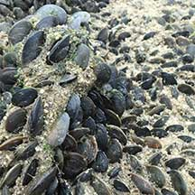
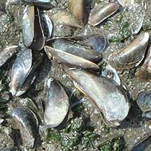
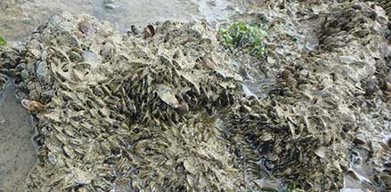
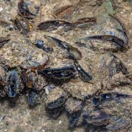
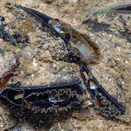
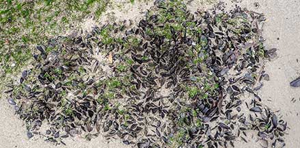

|
|
| bivalves text index | photo index |
| Phylum Mollusca > Class Bivalvia > Family Mytilidae |
| American
mussel Mytella strigata. Family Mytilidae updated Oct 2020 Where seen? This invasive mussel densely cover large areas of the Johor Strait since 2016. Native to Central and South America, it was previously known as Mytella charruana or the Charru mussel. But it has since invaded other warm waters in the USA, India, Thailand and the Phillipines. Features: 2-5cm long. The two-part shell is oval, smooth, matt. Colours brownish to black. The shell is rather triangular. Its byssal threads form a dense mat in which the mussels are embedded close to one another. |
 Kranji, Mar 17 |
 Dead ones. Kranji, Jan 18 |
 Dense carpet on the shore Kranji, Jan 18 |
| How did it reach Singapore? The study suggests it "may have been transported in ballast water and/or with fouling directly from its native provinces, or spread from the Philippines where there are already established populations of M. strigata, possibly since the nineteenth century." Invader impacts: A study found that this invasive mussel is displacing the Green mussel. The dense mats also prevented horseshoe crabs from burrowing into the ground. The invasive mussels were even seen growing on living horseshoe crabs, weighing them down and making it more difficult for them to move around freely. |
 |
| American mussels on Singapore shores |
On wildsingapore
flickr
|
| Other sightings on Singapore shores |
 Sembawang, Sep 20 Photo shared by Marcus Ng on facebook. |
 |
 Sembawang, Oct 20 Photo shared by Vincent Choo on facebook. |
Links
References
|